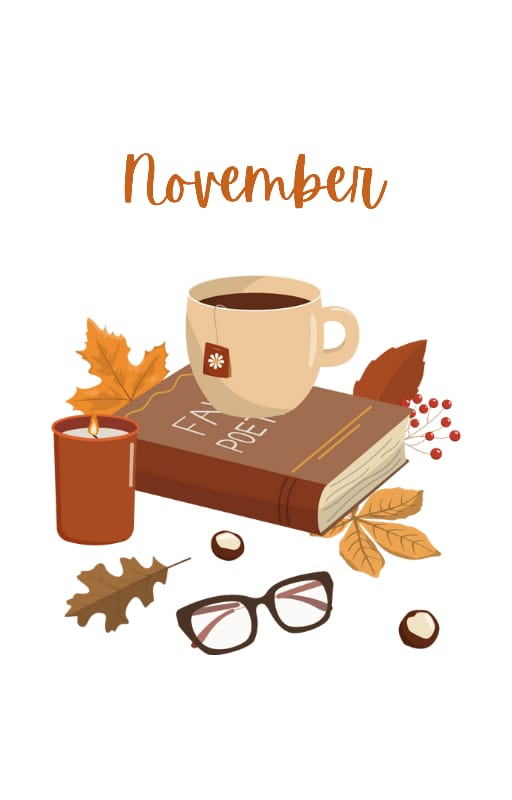
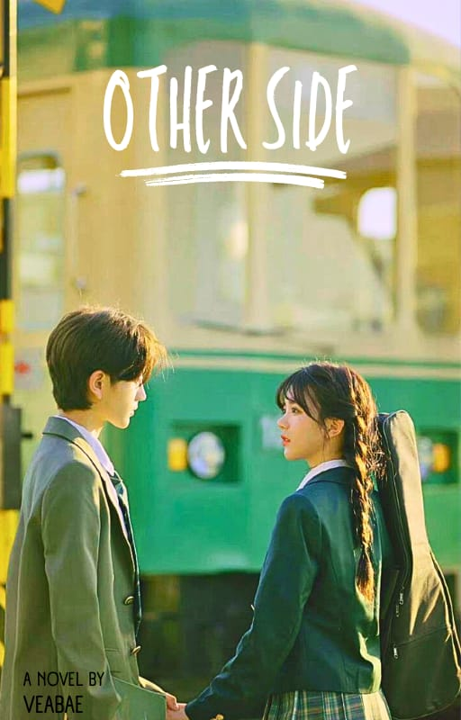
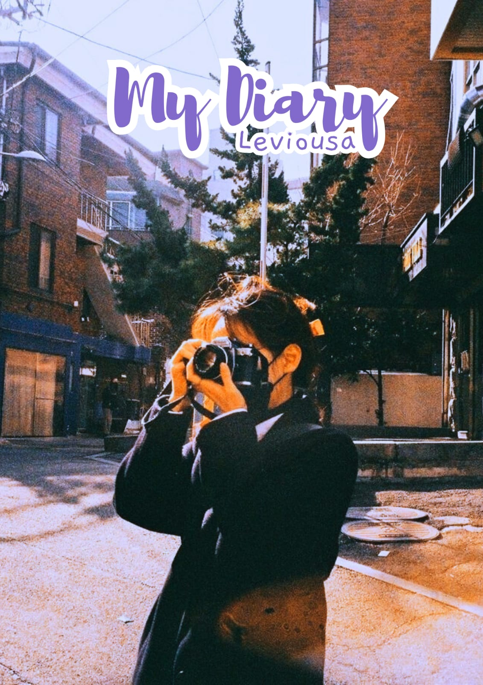
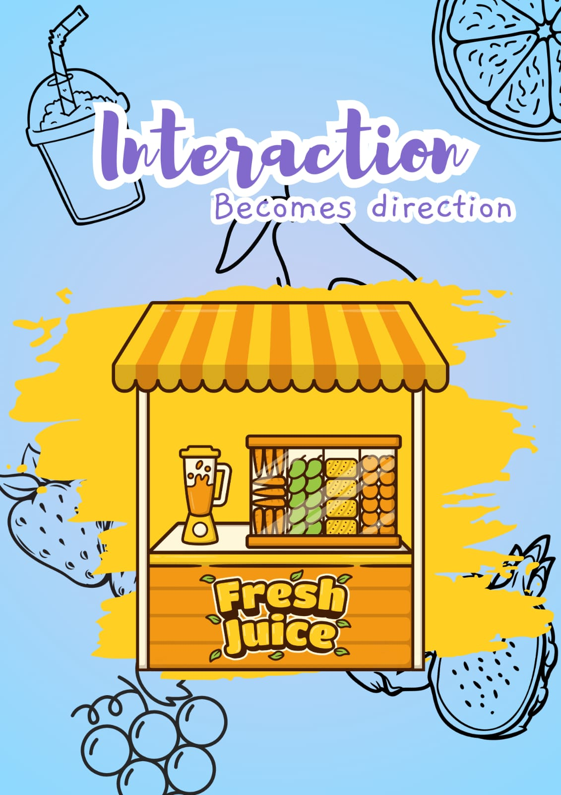
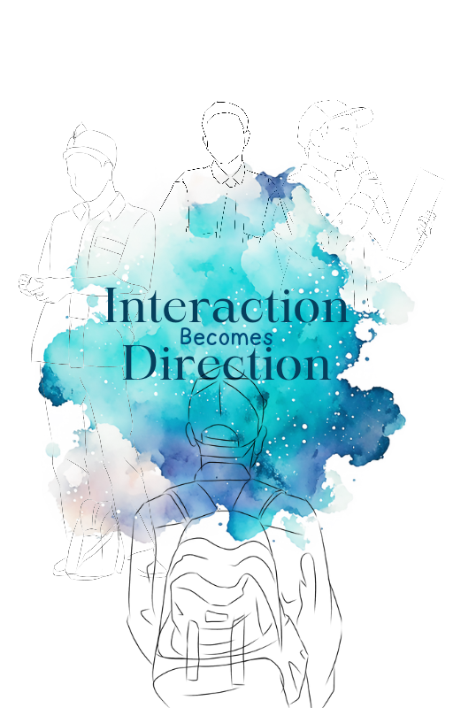
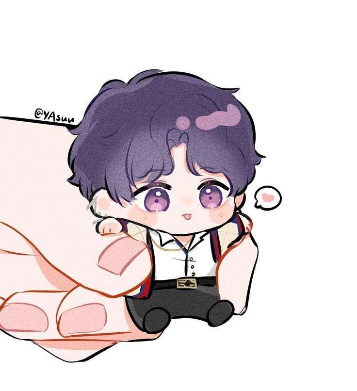

November
Ongoing
 Namun, semenjak salah satu keinginan terbesar Farel terwujud, sikap Farel berubah. Membuat Alista berpikir, bahwa Farel sedang menyembunyikan sesuatu darinya, hanya saja apa yang dia sembunyikan.Apakah Farel akan berubah seperti dulu lagi, setelah Alista mengetahui apa yang Farel sembunyikan?
Other Side
Complete
Di Minggu pertama sekolah, Alista cukup dekat dengan seorang pria di kelasnya, pria itu cukup baik menurut Alista, dan pria tersebut terkadang membantu Alista dalam beberapa hal. Akan tetapi dibalik sikap baiknya, ada beberapa hal yang membuat Alista semakin tertarik dekat dengannya, dari latar belakang keluarganya, mimpi-mimpinya dimasa depan hingga seseorang yang dianggap 'ibu' olehnya.
My Dairy: Leviousa
Complete
Aku Lea, si cewek galak, pemarah, tukang ngatur, dan lain sebagainya, semua orang menyebutkan jika aku adalah karakter antagonis di kelas ini, sayangnya, mereka tidak tahu jika karakter antagonis bukanlah karakter jahat, melainkan karakter yang menentang si protagonis. Dan yah ... aku juga bukanlah karakter protagonis disini.
Jadi ... siapakah karakter antagonis yang sesungguhnya dikisah ini?
IbD : 1=Love
Complete
Fantasi liar menyerangku, aku berpikir bahwa aku akan mendapatkan Si Ketos hanya karena aku dekat dengannya, aku akui aku dan dirinya dekat hanya karena jabatan kita satu sama lain, dia ketua OSIS nya, dan aku adalah sekretarisnya. Akan tetapi, memang ada ya? seorang ketua begitu sangat dekat dengan sekretarisnya, bahkan hehe ... aku, ...
Interaction Becomes Direction
Complete
Berawal dari interaksi kecil, menyapa, berbicara, saling mendukung satu sama lain, hingga terjalin ikatan persahabatan. Perlahan-lahan inraksi kecil itu mendatangkan rasa suka untuk salah satunya, dan dari interaksi kecil tersebut seolah-olah memberikan sebuah arah,
"Aku tidak tahu, ini akan mengarah ke hal baik atau sebaliknya."
Minor Mayor
Complete

Ranvi, seorang mantan Mayor Jenderal, membentuk sebuah organisasi rahasia untuk membantu negara-negara yang terkena konflik. Organisasinya bertujuan menghancurkan para pemimpin licik dan kejam, yang hanya ingin meraup keuntungan tanpa mempedulikan rakyatnya. Semuanya bermula saat dia diberhentikan dengan tidak hormat dari militer, bersama prajurit lainnya yang berani melawan perintah dan lebih peduli pada kesejahteraan rakyat.
About Me
Kamu dapat membaca lebih banyak buku karya dari VeaBae disini. Selain karya-karya VeaBae, disini juga kalian dapat membaca novel karya penulis lain.
Bagi kalian yang tertarik untuk mengenalkan novel wattpad kalian, kalian dapat mengirimnya lewat email yang tertera dibawah.